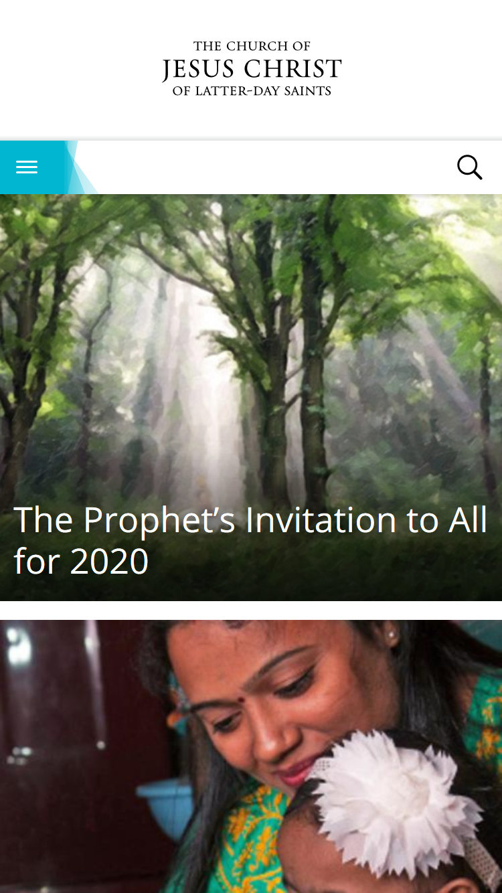

PARC: Alignment
color-hex.com

This website does a good job at aligning all the content of the page. This is a great exable of how you should align a lot of elements on one page.
White Space and Clean Design
churchofjesuschrist.org
This website uses whitespace in a a way that makes it easier to navigate the website. They way the use whitespace to separate the design makes it quick to realize that each picture is a separate link.
PARC: Contrast
imdb.com
This website uses a great contrast between the background, pictures and titles so you know the categories and what is and is not a movie. It is intuitive and easy to read even with the large amount of information on a site like this.